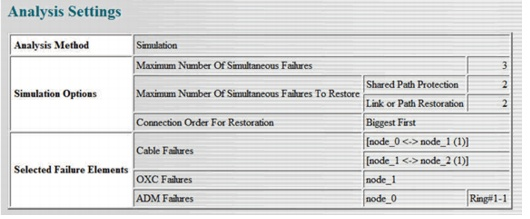
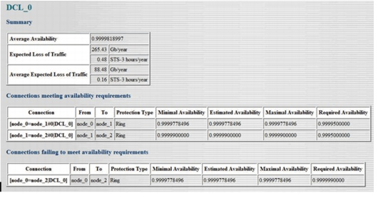
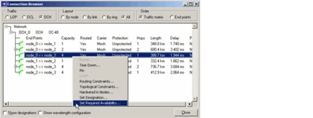

Failure Evaluation > Service Availability > Availability Analysis Report
Availability Analysis Report
The generated web report consists of two main parts. First, an overview of the availability analysis settings is shown. Next, an overview of the availability results is given per traffic matrix.
Figure 14-3 Availability Analysis Report—Analysis Settings

This section gives an overview of the analysis options you can select. First, the analysis method is displayed. Next, the options for the simulation method are displayed: the maximum number of simultaneous failures, the maximum number of simultaneous failures to restore for shared path protection and for restoration, and the connection order for restoration. The report only shows these options if you have selected the simulation method. At the end, an overview of the selected failure elements is displayed. These failure elements are shown per failure type.
Figure 14-4 Availability Analysis Report—Availability Results

The Availability Analysis report shows the availability results per traffic matrix. You can view the result for a traffic matrix by clicking on the traffic matrix name at the left side of the report. The availability results per traffic matrix consists of three parts:
- An overview is given of the availability of the traffic matrix: the average availability, the expected loss of traffic, and the average expected loss of traffic. Note that only the connections you selected are taken into account to calculate these parameters.
- The "Connections meeting availability requirements" table is displayed. This table contains those connections for which the minimal calculated value for the availability is higher than or equal to the required availability set for the connection. This table shows, per connection, the connection name, the source and destination name, and the protection type. Also, the minimal, the estimated, and the maximal calculated value for the availability are shown.
- Next, the table shows the required availability of the connection. The minimal and maximal availability are respectively a lower-border and upper-border for the exact availability of the connection. Note that the estimated value is only displayed if the simulation method is selected. The equality of the minimal and maximal availability implies that this value is the exact value for the availability of the connection.
- At the end of the report, the "Connections failing to meet availability requirements" table is displayed and contains the connections for which the minimal value for the availability is lower than its required availability.
Note—The required availability of an LOP, DCL, or OCH connection can be specified by right-clicking on the connection in the Network > Connection Browser. This parameter should have a value between 0 and 1.
Figure 14-5 Connection Browser

| Home © 1987-2007 OPNET Technologies, Inc. All Rights Reserved. This software may be covered by one or more U.S. Patents. See complete patent notice in the Legal Notices section. OPNET Support Center |